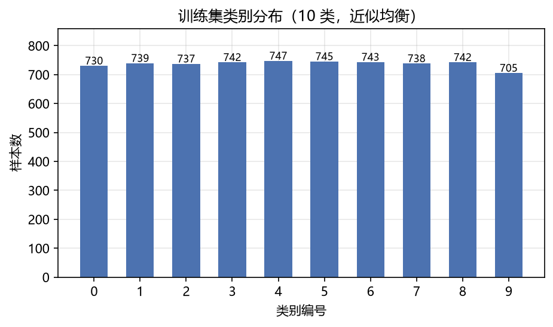
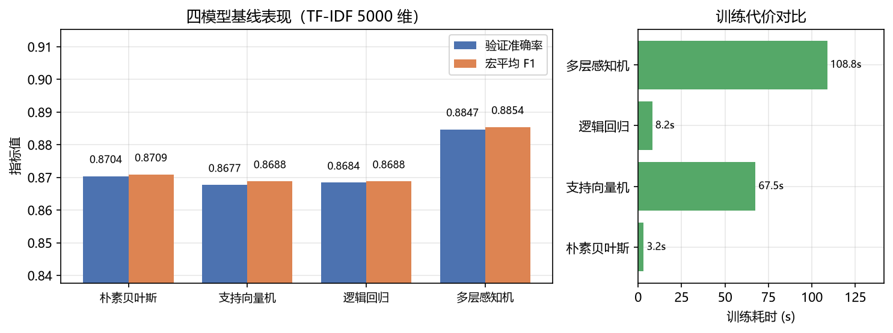
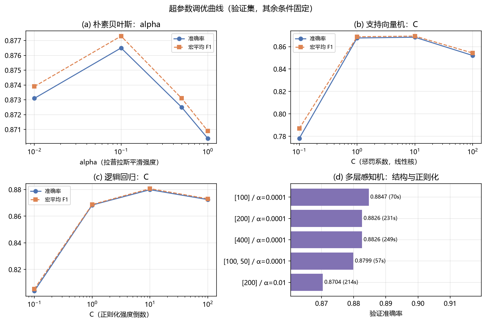
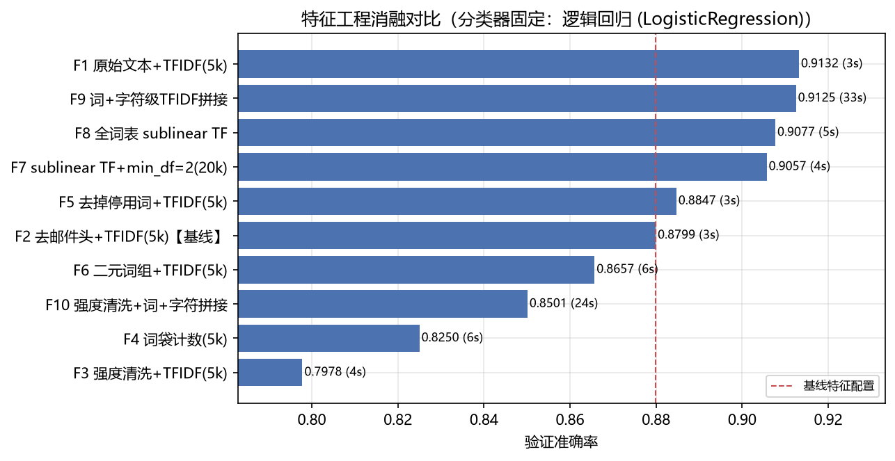
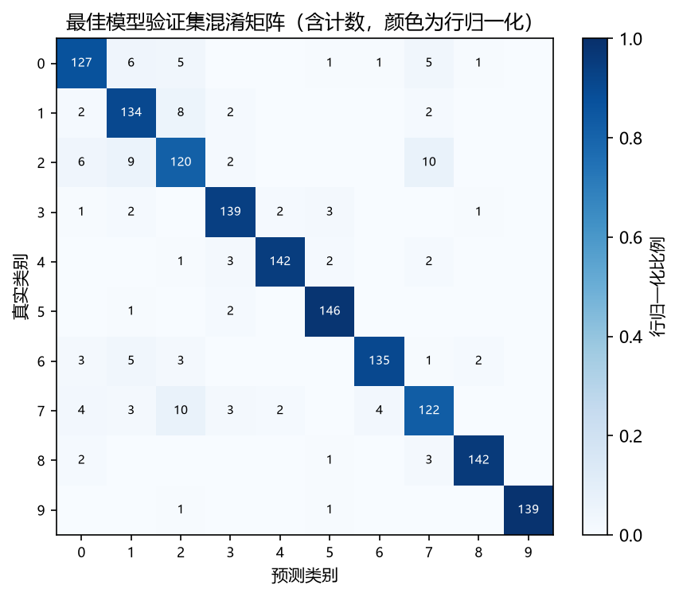
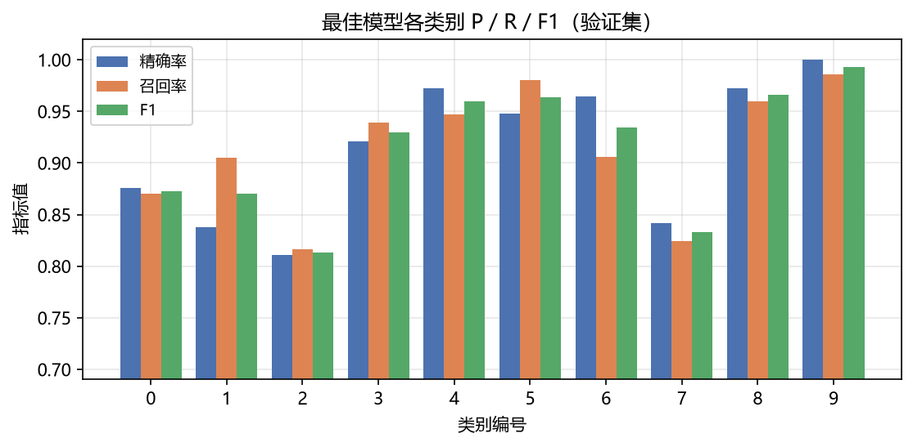

目标是把一段新闻文本 x 自动归入 10 个预定义类别之一 y ∈ {0,…,9}，训练数据带标签，属监督学习。实验前明确两条假设：H1（方法前提）话题相近的文章用词也相近，词频统计足以支撑分类；H2（待检验）文本中的邮件头（From/Subject 等）是与话题无关的格式噪声，去除后模型更好。评价指标在实验前确定为验证集准确率（主）与宏平均 F1（辅），全程按此选择方案，不因结果改变标准。
课程提供训练集 7368 条（含标签）与无标签测试集 2457 条。10 个类别基本均衡（占比 9.57%~10.14%，图 1）；无缺失值与重复样本；字符数中位数 1139、均值 1855、最长 160616，呈长尾分布。测试集全程封存，仅最终预测一次。验证集按类别分层、以 8:2 从训练集划出（1474 条），固定随机种子 42。泄露排查：全库仅 12 条样本的引文中出现过 Newsgroups: 字段（非样本自身头部），不存在直接标签泄露，H2 的检验是公平的。

采用 TF-IDF 将文本转为数值向量：TF-IDF(t,d) = TF(t,d) × IDF(t)，其中 IDF(t) = log[(1+N)/(1+DF(t))]+1，词频给高频词以权重、逆文档频率压制"the、and"这类无区分度的词。预处理设为三种强度（none 原样 / light 去邮件头 / heavy 再删引文与标点数字），向量化变体包括词级 TF-IDF、词袋计数、停用词、二元词组、sublinear 对数词频、以及词+字符级 n-gram 拼接，共 10 种配置 F1–F10 用于消融。所有词表与 IDF 统计量只在训练折上拟合，验证/测试仅做变换，杜绝数据泄露。
四种课程要求的分类器统一在相同划分、种子与指标下比较，每次只改变一个因素。超参搜索范围按课程 TUNING.md 建议设定（表 1），逐模型用验证集挑选最优。
| 模型 | 核心思想（一句话） | 搜索范围 | 最优配置 | 验证准确率 |
|---|---|---|---|---|
| 朴素贝叶斯 | 贝叶斯定理 + 特征独立假设，按词计数投票 | α ∈ {0.01,0.1,0.5,1} | α=0.1 | 0.8765 |
| SVM | 最大化分类间隔的线性分类器，C 控制对错分的容忍度 | 线性 C∈{0.1,1,10,100}；RBF C×γ | RBF C=10, γ=scale | 0.8874 |
| 逻辑回归 | 线性模型输出类别概率，C 为正则化强度倒数 | C ∈ {0.1,1,10,100} | C=10 | 0.8799 |
| MLP | 带隐层与 ReLU 激活的全连接网络，α 为 L2 系数 | 层结构 (100)/(200)/(100,50)/(400)，α∈{1e-4,1e-2} | (100,), α=1e-4 | 0.8847 |
表 1 模型原理、搜索范围与最优配置（基线特征配置：去邮件头 + TF-IDF 5000 维）
四模型基线准确率集中在 0.868~0.885（图 2）：MLP 略高但训练耗时是朴素贝叶斯的 70 倍。所有方法均远超随机水平（10%），验证了 H1——词频统计足以支撑分类。

调参曲线见图 3。朴素贝叶斯 α 从 1.0 降至 0.1 提升 0.6 个百分点：减弱拉普拉斯平滑使长尾判别词获得更大权重。逻辑回归对 C 最敏感（C=10 比 C=0.1 高 7.6 个百分点），说明弱正则有利于充分拟合高维稀疏特征。SVM 线性核与 RBF 核（0.8874）基本打平，佐证 TF-IDF 空间已近似线性可分。MLP 加宽（200/400）或加深（100,50）均无提升，增大 α 反而下降——容量不是瓶颈。

以逻辑回归（C=10）为固定分类器，10 种特征配置的验证集表现见图 4（SVM 下结论一致）。三个主要发现：① 假设 H2 被推翻——保留原始文本的 F1（0.9132）比去邮件头的 F2（0.8799）高 3.3 个百分点，Subject/Organization 等字段携带真实的话题弱线索；② 词表大小是单项最大杠杆——5k→3.3 万全词表（F8，0.9077）提升约 4 个百分点，超过任何换模型与调参的收益；③ 过度清洗有害——heavy 清洗（F3，0.7978）大幅低于基线，因为 IDF 本已自动压制高频无信息词，删标点/数字反而误伤了有判别力的 token。字符级 n-gram 拼接（F9，0.9125）比 F8 高 0.5 个百分点，但训练贵约 10 倍。

在 F1 特征上尝试软投票集成：NB+LR 为 0.9125，NB+LR+SVM 为 0.9145，仅比单个 LR（0.9132）高 0.13 个百分点，而训练耗时增加约 60 倍。按评分标准"综合考虑验证集性能与模型复杂度"，集成方案不采用。
最终模型在验证集上的混淆矩阵与各类别指标见图 5、图 6。最弱类别为类 2（F1=0.8136）与类 1（0.8701），二者互相混淆：观察高频词发现两类都以硬件术语为主（scsi/drive/card 与 ax/max/windows），语义近邻导致线性边界模糊，属任务固有的类间歧义而非模型缺陷。类 9（F1=0.9929）等类别词表区分度强，几乎无错分。
 图 5 混淆矩阵（颜色为行归一化） |
 图 6 各类别 P/R/F1（验证集） |
综合性能与复杂度，最终方案为：原始文本 + TF-IDF(5000 维) + 逻辑回归(C=10)（单模型、训练约 3 秒）。5 折交叉验证在全训练集上的结果为准确率 0.9097 ± 0.0120、宏平均 F1 0.9103 ± 0.0118（表 2）；留出验证集 0.9132。随后用全部 7368 条训练数据重训模型，对 2457 条测试集做一次性预测，保存为 predictions.csv（各类别预测数 224~262，与训练分布一致）。注意全训练集拟合准确率达 0.999，与交叉验证约 0.910 之间存在约 9 个百分点的泛化差距——高维稀疏特征下线性模型对训练集过拟合是常态，这正是必须依赖验证集/交叉验证选型、而不能看训练分数的原因。
| 折次 | 1 | 2 | 3 | 4 | 5 | 均值 ± 标准差 |
|---|---|---|---|---|---|---|
| 准确率 | 0.9159 | 0.9193 | 0.8928 | 0.9192 | 0.9016 | 0.9097 ± 0.0120 |
| 宏平均 F1 | 0.9167 | 0.9197 | 0.8934 | 0.9194 | 0.9023 | 0.9103 ± 0.0118 |
表 2 最终方案 5 折分层交叉验证（全训练集，seed=42）
环境：Python 3.13.2 / numpy 2.5.2 / pandas 3.0.5 / scikit-learn 1.9.0 / matplotlib 3.11.1；全局随机种子 42；分层 8:2 划分；测试集封存。代码仓库提供完整脚本，依次运行 run_experiments.py --stage eda/baseline/tuning/features/final 即可从原始数据复现全部结果表（results/tables/）与图表（results/figures/），最终由 --stage final --feature F1 --model lr --C 10.0 生成提交文件 predictions.csv（2457 行、无表头、每行一个 0-9 整数，与课程样例格式一致）。
结论：① 该 10 分类任务在 TF-IDF + 线性模型框架下即可达约 0.91 的验证集准确率，验证了 H1；② 邮件头是信息而非噪声（H2 被推翻），词表规模是比模型选择与调参更重要的因素；③ 遵循"验证集选型、测试集封存、固定种子"的规范，全部结果可复现，最终方案逻辑回归 C=10 兼顾了性能与复杂度。
局限：单一划分与单次随机种子（已用 5 折 CV 缓解波动）；未引入外部词向量与预训练模型；超参网格取值较粗；测试集无标签，其真实性能无法在本实验中观测。